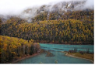
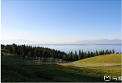

哪些杭州美食如西湖美景般让你念念不忘？
杭州菜作为浙江菜系的一大分支虽然不如淮扬菜那么博大精深，但代表菜绝对是不少的。1.龙井虾仁 以前江南河网密集，最不少的就是青壳河虾，壳薄肉少胡子长，除了醉虾也没什么大头吃的。
可这件东西的更妙之处在妻不如妾，妾不如偷，偷不偷不着的意思。河虾用手去头，大拇指一挤就可以将虾肉全部作出，干净利落。茶叶必是梅家坞上村平岭的茶树所产，清明前小叶萌出摘取，
这种明前茶叶细润无大青草气。水要虎跑的水，见天有一堆老头早上在那用大塑料桶接水，水清冽矿物均匀就行。龙井茶需要虎跑水泡制一下，润开就可以了，别傻
1104190浏览
大美新疆-金黄与银白世界

9天的国庆小长假，去哪里好玩呢？国庆期间的各个著名景点人都爆满，人有少景色又美的地方，那就是祖国的西部地区——新疆！北疆！我来啦！先附上几张这次旅行照的美景。旅游准备事项
先说旅游路线，我们是从左往右的路线：北京——乌鲁木齐——魔鬼城（克拉玛依市）——布尔津——禾木——克纳斯——北屯——可可托海——富蕴——木垒胡杨林——库木塔格沙漠——乌鲁木齐，给
大家吃个定心丸，北疆很安全的！每个加油站、大型商场都要刷身份证才能进，进到下一个城市或者区县都会进行安检，刷身份证！感觉没有身份证，在北疆
741浏览
一辆车、三代人、一万两千公里、说说我眼中的南疆和北疆

9天的国庆小长假，去哪里好玩呢？国庆期间的各个著名景点人都爆满，人有少景色又美的地方，那就是祖国的西部地区——新疆！北疆！我来啦！先附上几张这次旅行照的美景。旅游准备事项
先说旅游路线，我们是从左往右的路线：北京——乌鲁木齐——魔鬼城（克拉玛依市）——布尔津——禾木——克纳斯——北屯——可可托海——富蕴——木垒胡杨林——库木塔格沙漠——乌鲁木齐，给
大家吃个定心丸，北疆很安全的！每个加油站、大型商场都要刷身份证才能进，进到下一个城市或者区县都会进行安检，刷身份证！感觉没有身份证，在北疆
16645浏览